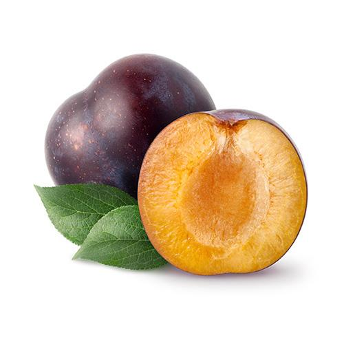

Я́блоко — сочный плод яблони, который употребляется в пищу в свежем и запеченном виде, служит сырьём в кулинарии и для приготовления напитков. Наибольшее распространение получила яблоня домашняя, реже выращивают яблоню сливолистную. Размер красных, зелёных, жёлтых или оранжевых шаровидных плодов 5—13 см в диаметре. Происходит из Центральной Азии, где до сих пор произрастает дикорастущий предок яблони домашней — яблоня Сиверса[1]. На сегодняшний день существует множество сортов этого вида яблони, произрастающих в различных климатических условиях. По времени созревания отличают летние, осенние и зимние сорта, более поздние сорта отличаются хорошей стойкостью.
